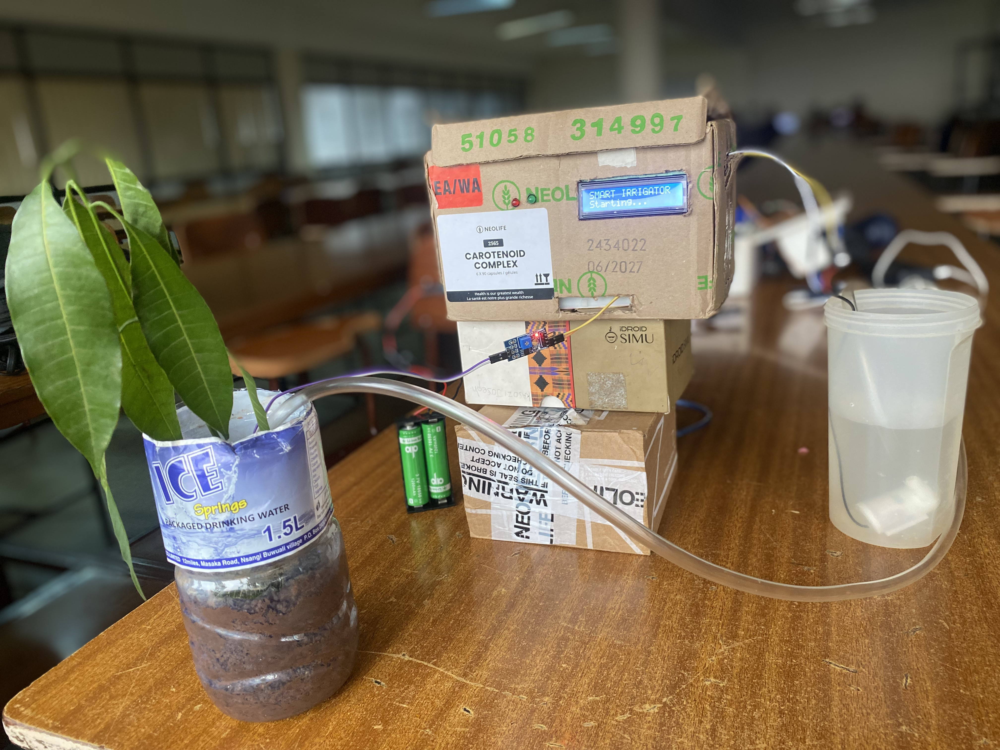
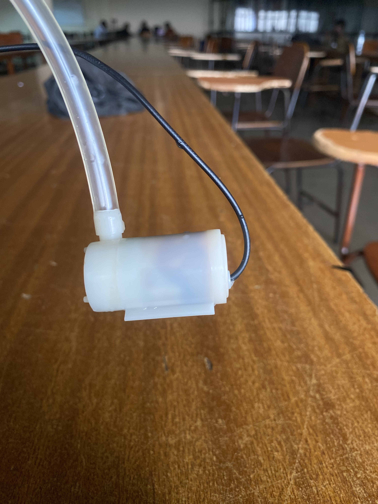
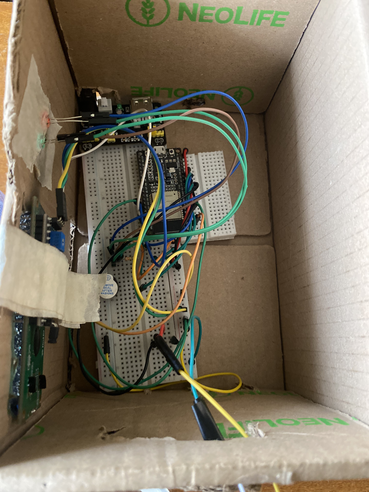
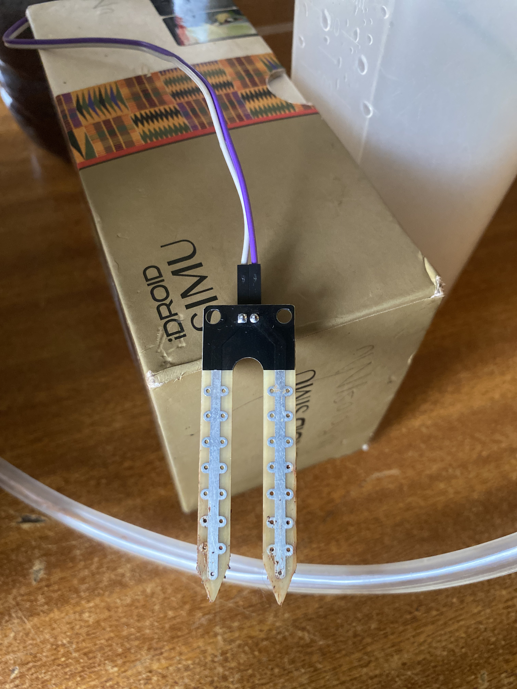

Automatic pulsed irrigation
When soil becomes dry, the pump runs for a five-second pulse, then waits six seconds for the soil to settle before checking again.

EMBEDDED SYSTEMS GROUP 25
AquaSense monitors soil moisture, irrigates in safe pulses, stores irrigation history in the cloud, and gives the farmer a clear live dashboard from anywhere with internet access.
THE PROBLEM
Small-scale farmers need a simple way to see the condition of soil and act quickly without staying next to the garden. AquaSense turns live sensor readings into clear dry/wet status, automatic watering, and a remote control interface.
THE SOLUTION
KEY FEATURES
When soil becomes dry, the pump runs for a five-second pulse, then waits six seconds for the soil to settle before checking again.
The ESP32 and app communicate through Firebase Realtime Database, so the farmer can monitor the system over mobile data or Wi-Fi.
Moisture readings, pump changes, and soil-status events are stored in the cloud and displayed as a simple trend chart.
AquaSense calculates drying-rate and pump-recovery recommendations. A farmer must approve any suggested threshold before it affects irrigation.
HARDWARE GALLERY



DEMO
This video shows the connected system monitoring the soil and responding through the AquaSense dashboard.
IMPLEMENTATION
TEAM
InstitutionMakerere University, College of Computing and Information Sciences (CoCIS)
SupervisorDr. Paddy